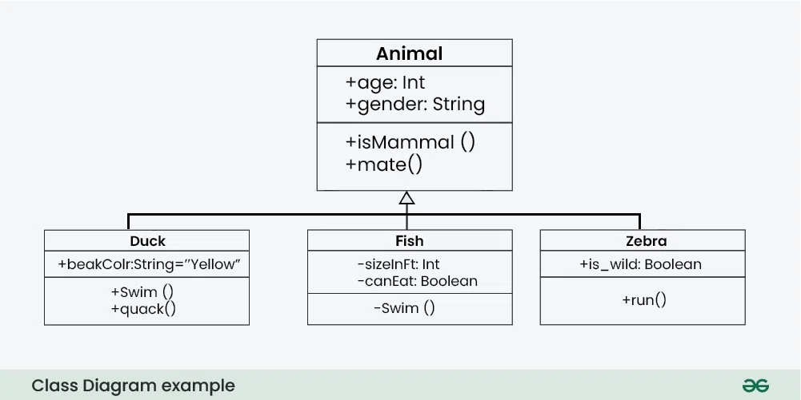
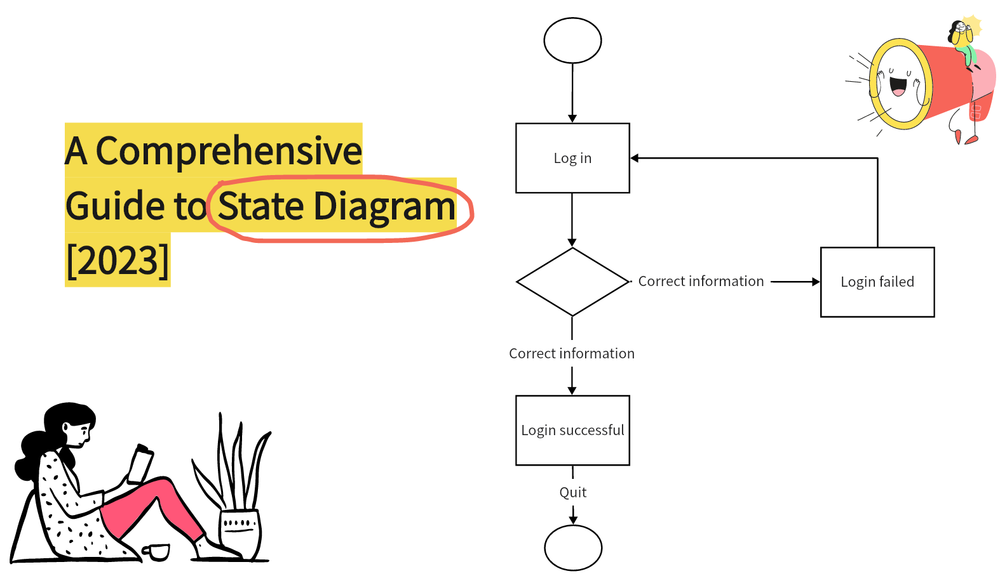
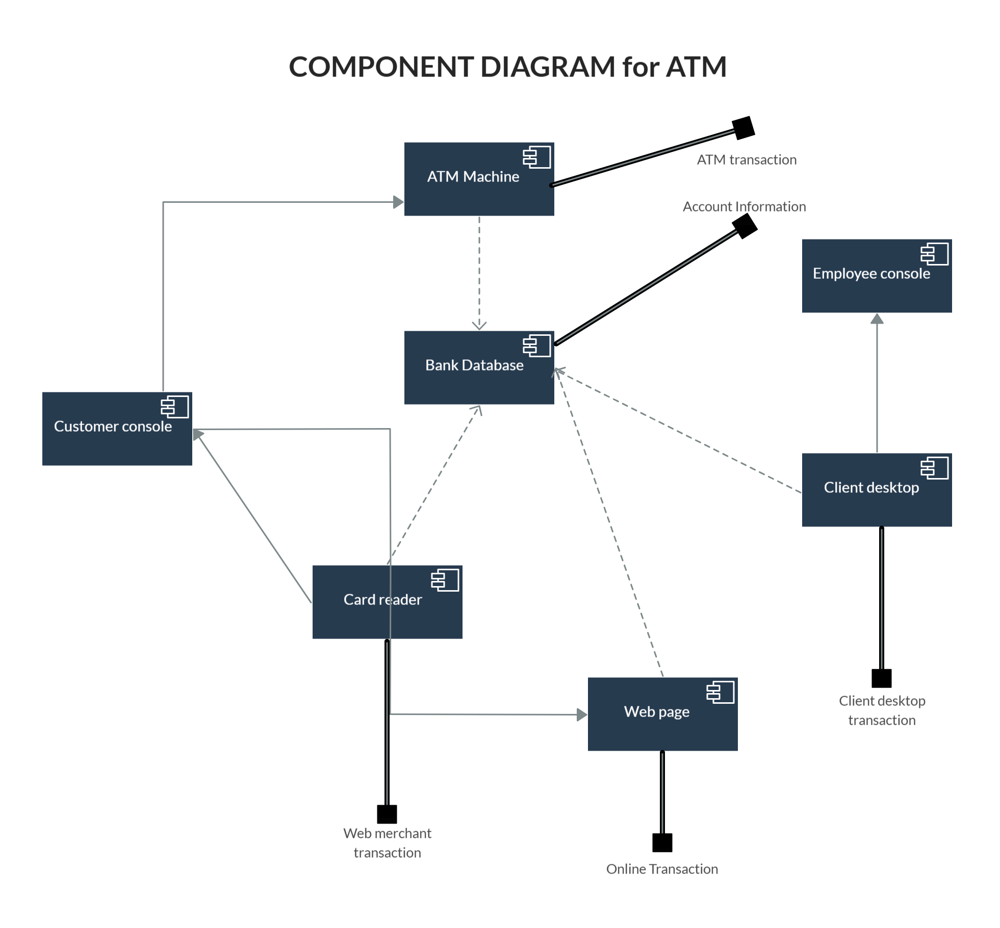

Elemendid: kasutajad (kriipsujukud), tegevused (ovaalid) ja seosed (jooned).

UML on standaarne visuaalne modelleerimiskeel, mida kasutatakse tarkvarasüsteemide kirjeldamiseks.
See aitab meeskondadel süsteemi struktuuri ja käitumist ühtemoodi mõista enne koodi kirjutamist.
Kirjeldab süsteemi funktsionaalsust kasutaja vaatepunktist.
Elemendid: kasutajad (kriipsujukud), tegevused (ovaalid) ja seosed (jooned).
Näitab süsteemi klasse, nende atribuute (andmeid) ja meetodeid (tegevusi).
Elemendid: Klassi kast (nimi, atribuudid, meetodid), Seosejooned.

Keskendub objektide vahelisele suhtlusele ja sõnumite saatmise järjekorrale ajas.
Elemendid: Kasutaja (Customer), päringud (nooled), objektid (kastid).

Näitab ühe objekti erinevaid olekuid ja sündmusi, mis kutsuvad esile muutusi.
Elemendid: Olekud (kastid), Üleminekud (nooled).

Visualiseerib tarkvara füüsilist struktuuri ja moodulitevahelisi sõltuvusi.
Elemendid: Komponendid (kastid), Liidesed (nooled).
